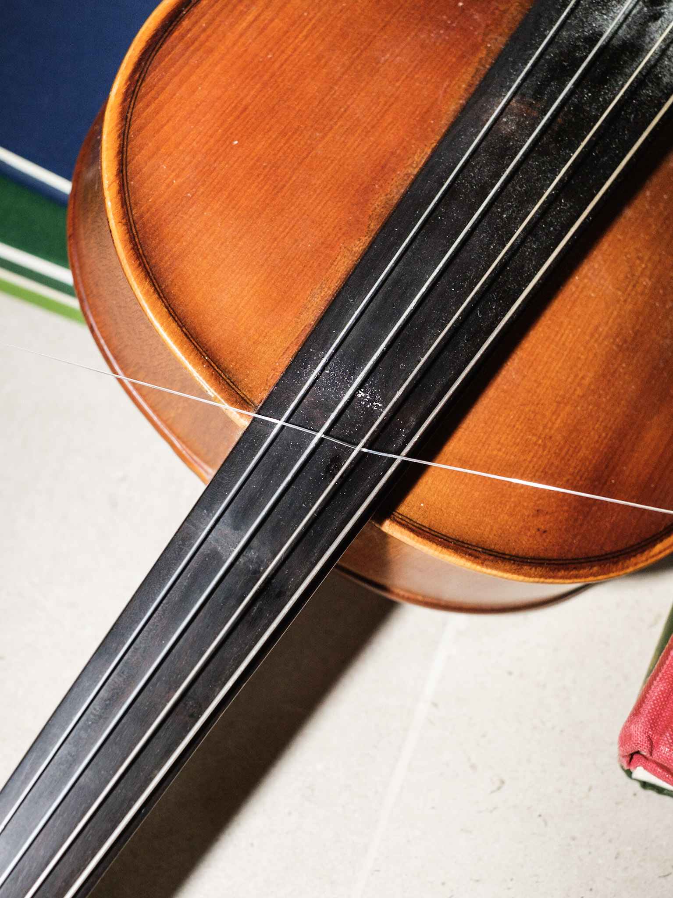

threaded | spinning | abrading | possibly breaking
created with Tanguy Pocquet
turntables, violin, viola, acoustic guitar, classical guitar, fishing line, powdered rosin, colourful hard-bound music scores
2022
flexible duration (concert work or installation)
nonclassical at 20, Southbank Centre, London, May 2024
Chorlton Arts Festival, Manchester, May 2024
International Anthony Burgess Foundation, Manchester, March 2024
Wharf Chambers, Leeds, December 2023
Broadcast BBC Radio 3, New Music Show, January 2023
Huddersfield Contemporary Music Festival, November 2022
The House of Bedlam, RNCM Concert Hall, Manchester, November 2022
nonclassical: Dynamical Systems and Natural Environments, St John’s Church, London, September 2022